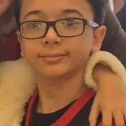
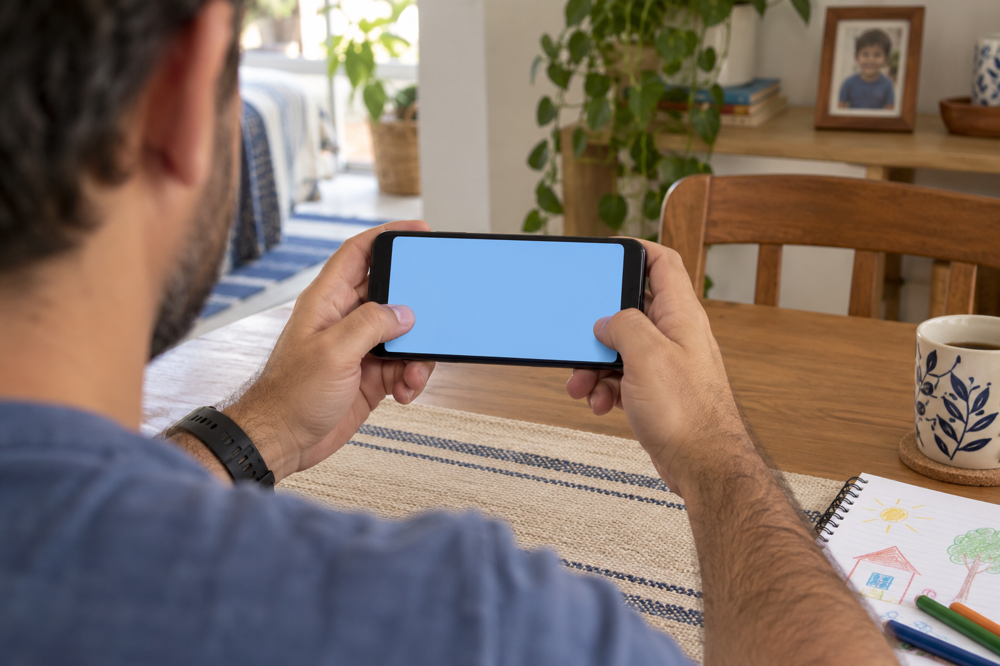
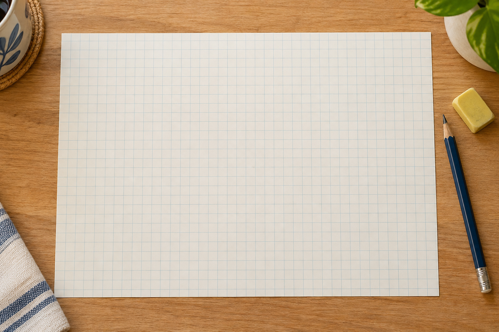

Diário de criador
André terminou o primeiro jogo e já imaginava o próximo.
André · aluno
‘Esse foi o primeiro e já quero fazer um maior.’
André terminou o primeiro jogo e já imaginava o próximo.
‘Esse foi o primeiro e já quero fazer um maior.’
André · aluno

A frase conta a vontade dele de continuar criando depois daquela experiência.
Um projeto permite mostrar algo que a criança aprendeu a fazer.

Ela pode contar suas escolhas, jogar com alguém e imaginar o que acrescentaria.
Veja uma possibilidade num jogo de tabuleiro da nossa plataforma.
Cair numa casa especial dá dez pontos ao jogador.
Quem cria escolhe a casa e o prêmio.

Depois testa se a pontuação muda no lugar certo. Outra ideia pode virar uma nova regra.
Ao ver o projeto do seu filho, pergunte sobre uma escolha que ele fez.
A resposta ajuda a conhecer o que ele aprendeu e o que ainda quer experimentar.
Aqui mostramos possibilidades de aprender, criar e compartilhar jogos próprios.
Siga o perfil para acompanhar essa jornada.